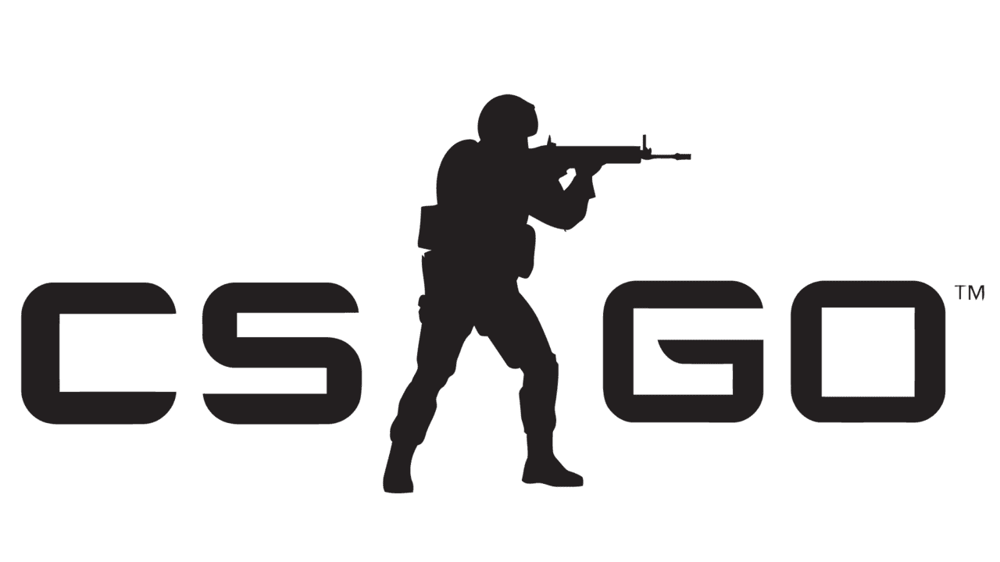
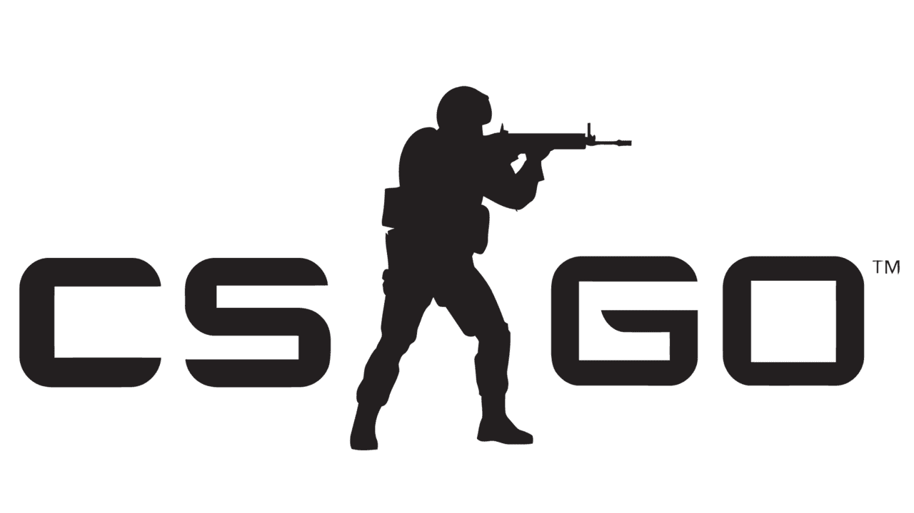
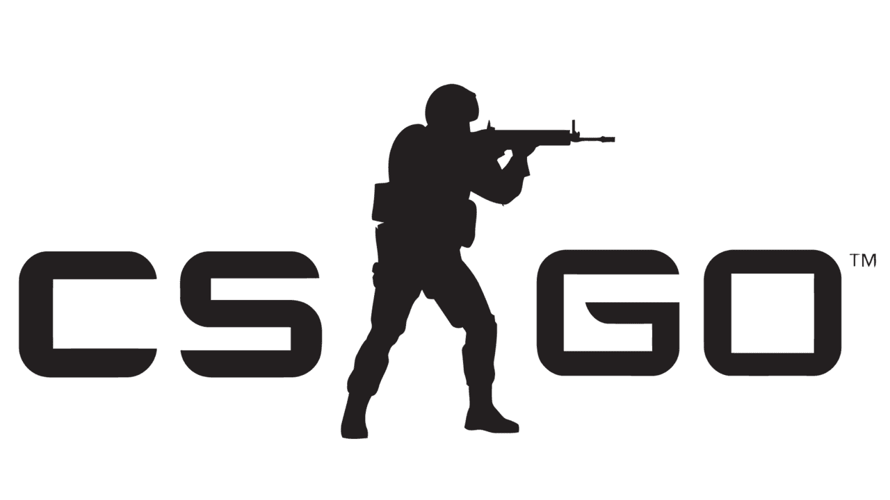

El estigma que los videojuegos han generado en las "cabezas viejas" que lo ven solo como un hoobie o actividad ludica.
Existencia de organizaciones deportivas, ligas y demas de caracter profesional son vistas en menos por el area economica del deporte clasico.
Se puede desarrollar en 2 modalidades:
Los representantes Nacionales como su nombre indica es una seleccion de jugadores de un pais en comun representando su nacion.
Los representantes Continentales serian una agrupacion de equipos que representaran un continente en especifico, la cantidad de representantes puede variar dependiendo de la prioridad que tenga el pais.
Se debe destacar que las plazas que se pueden otorgar dependerian de la cantidad de juegos considerados como Olimpicos.
Los beneficios entregados por el reconocimiento de los E-sports abarcan desde un aspecto economico a uno cultural.
En el ambito Economico se abre una nueva alternativa de inversion nacional, el mundo de los deportes electronicos ha llegado con un gran impacto tanto que inversionistas y franquicias han comenzado a invertir en este, por ejemplo La franquicia del equipo deportivo "Golden state Warriors" tiene su propio equipo de e-sports "Golder Guardians", mismo ejemplo sigue el equipo PSG.
El impacto Cultural que impondria esta idea es el reconocimiento de cierto tipo de Videojuego como una posibilidad de profesion, la masa entenderia la cantidad de esfuerzo y recursos que se deben implementar para competir al nivel mas alto. Con esto el pensamiento de "deja de jugar no te llevara a nada" cambiaria progresivamente con el sentimiento de representatividad de ver un equipo nacional compitiendo.

Referencias orientadas al acercamiento de los e-sports al mundo Olimpico
"Los e-Sports se acercan a los juegos Olimpicos 2020" MARCA.es